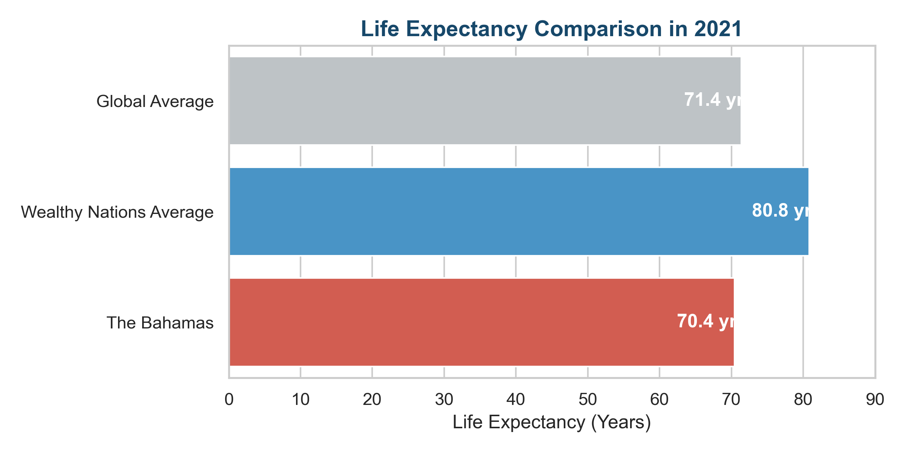

The Longevity Equation
Uncovering the hidden forces of wealth, gender, and lifestyle that determine human lifespan across the globe
Scroll down or use arrow keys to navigate
Uncovering the hidden forces of wealth, gender, and lifestyle that determine human lifespan across the globe
Scroll down or use arrow keys to navigate
D3 Chart Placeholder
Where you are born plays a massive role in how long you live.
This world map gives you a quick snapshot of global health. You can drag the timeline below to see how major events like economic booms, better medicine, or health crises, have changed life expectancy around the world since the year 2000.
World map placeholder
Which countries are leading the way in human survival?
This racing bar chart shows the top 5 countries with the highest life expectancy from 2000 to 2021. Hit the Play button below to watch how the rankings shift over two decades as nations compete to improve their public health.
When Money Fails to Buy Time
We usually assume that richer countries have healthier and longer living citizens. But there are striking exceptions.
Take The Bahamas in 2021 as an example. It is one of the wealthiest nations in the world with a GDP per capita over $30,000. Yet its people only live to about 70.4 years on average. This is more than 10 years shorter than the average lifespan of other wealthy nations. Why?
The answer lies in inequality and lifestyle diseases. Much of the national wealth comes from luxury tourism and offshore banking meaning the money is not evenly shared with everyday citizens.
Combine this wealth gap with a diet heavily reliant on imported processed foods and you get a massive 20.4 percent mortality rate from chronic conditions like diabetes and heart disease before the age of 70. This proves that raw wealth alone cannot buy time if a nation fails to invest in health education and disease prevention.

Life expectancy comparison across different income brackets in 2021
Chart 2 Placeholder
Conclusion: The Full Picture of Health
As we've seen, measuring a country's true health is complicated. GDP alone doesn't guarantee a long life if that wealth isn't used to prevent chronic lifestyle diseases.
Now it's your turn to explore! Use the timeline and controls below to select a country. Check its unique "health fingerprint" across five areas:
Scroll down to view team credits.
Dynamic radar chart placeholder
Keep scrolling to see the team info